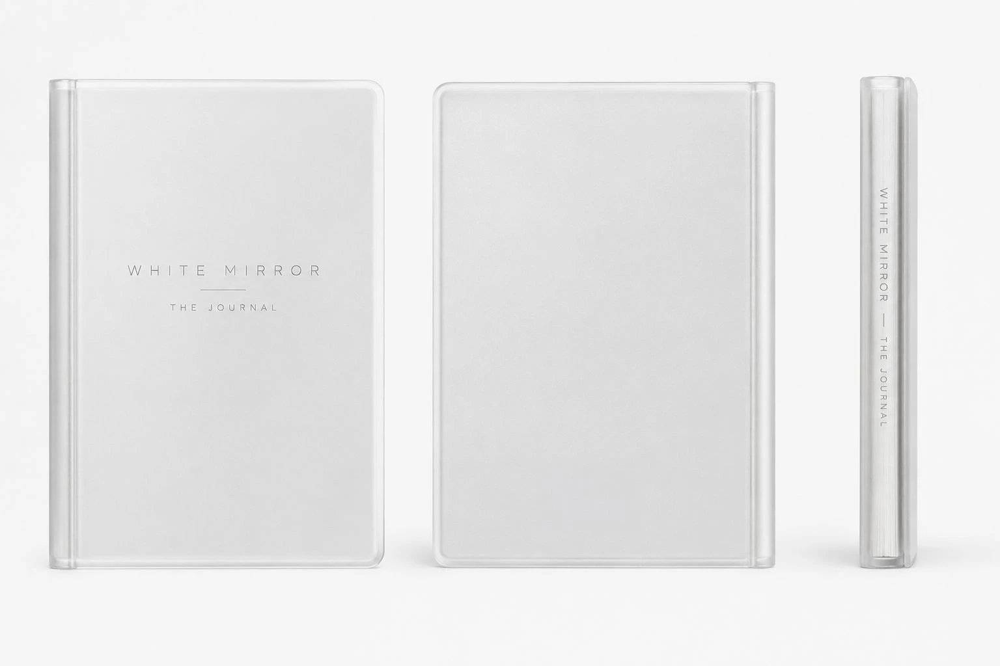

The Physical Journal
A private space, on paper.
A tangible place for writing, reflection, and reconnecting with yourself without digital distractions. Flexible and reusable: you decide what goes on the page.
The Mind · from White Mirror Labs
A physical journal and a companion app, built as one practice. You write by hand, in a private space. The app helps you notice, organize and understand what you wrote.
Pre-orders are open. Physical journal 499 EGP, delivery in Egypt included. Pre-order now.

Why it exists
A blank notebook gives room without direction. An app alone is one more screen. White Mirror Journal pairs the two, and leaves the meaning to you.
The Physical Journal
A tangible place for writing, reflection, and reconnecting with yourself without digital distractions. Flexible and reusable: you decide what goes on the page.
The Companion App
Daily prompts, mood exploration, guided breathing, and a view of recurring patterns across your entries. Scan handwritten pages into the app, where supported.
How they work together
The Companion App
Intelligent technology helps you reflect, organize your experiences and notice possible patterns. You stay in control of what they mean.
Today
How you feel, one prompt, and space to write. Sleep and HRV sit at a glance when you connect your health data. Every entry is encrypted with a key of your own, and pages from your paper journal can come in by camera.
Patterns
Your moods and entries across time. Insights point out possible patterns; they suggest, and you decide what they mean.
Meditate
Guided, silent, or with music. One animated circle paces the breath for you, with ambient channels for the whole session.
Profile
Your streak, your progress through the Foundation journey, and your account.

The Method
The guiding framework behind the practice. From noticing how you feel to choosing what comes next.
Notice how you feel.
Name what is happening within you.
Explore what may be behind it.
Consider another perspective.
Recognize patterns and changes over time.
Choose a meaningful next step.
The Foundation Edition
Discover Yourself is a guided 90-day path in five phases. It is one way to use White Mirror. The journal itself stays open to however you want to write.
Days 1 – 18
You cannot change what you cannot see. Slow down and name the honest feeling.
Days 19 – 36
Awareness without depth is just observation. Look beneath the first answer, to understand rather than blame.
Days 37 – 54
You've seen clearly. Now you interpret differently. Rigid stories loosen into self-compassion.
Days 55 – 72
A recognized pattern changes a life. Triggers and loops become visible across time.
Days 73 – 90
Self-awareness without action is autobiography. Choose one honest next step, and live it.
FAQ
A physical journal paired with a companion app, built on the M.I.R.R.O.R. method. The journal is a private, flexible space to write and reflect without digital distractions. The app adds daily prompts, mood exploration, guided breathing and insights into recurring patterns.
No. The physical journal is a flexible space you can use as you like. The Foundation Edition, Discover Yourself, adds a guided 90-day journey in five phases for those who want structure.
Pre-orders are open now. The physical journal is 499 EGP with delivery in Egypt included; the digital edition is 249 EGP. Pre-order on our pre-order page or call +20 101 818 6653.
Yes. The companion app works on its own, and works best alongside the journal. The digital edition is 249 EGP; pre-order it here.
Yes. Once orders open, you will have 14 days from delivery to return the Journal without giving a reason, we collect it at no cost, and the refund is sent within 7 days. Damaged or wrong items are always put right at our cost.
The first edition is printed in English, and its pages are designed to be written in whichever language your pen prefers. The Terms, Privacy and Refund pages are available in Arabic, and support answers in Arabic.
Pre-order now
Physical journal: 499 EGP, delivery in Egypt included. Digital edition: 249 EGP.
Or call +20 101 818 6653.